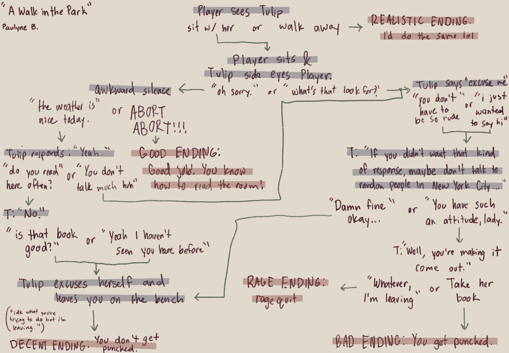
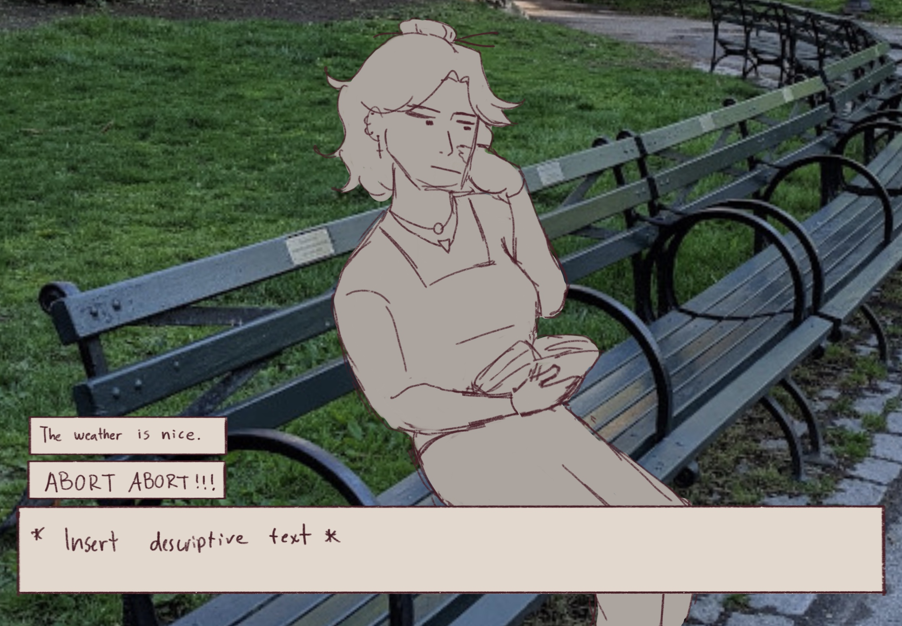

Our story takes place in Central Park. We play as an unnamed protagonist who is taking their daily stroll around the area. We see a grey-haired young woman, Tulip, sitting on one of the benches. She captivates the player and we decide to sit down next to her. From here, you will be able to decide what kind of personality the protagonist will have. Will you be nice to her? …Or will you be an absolute douche bag?

